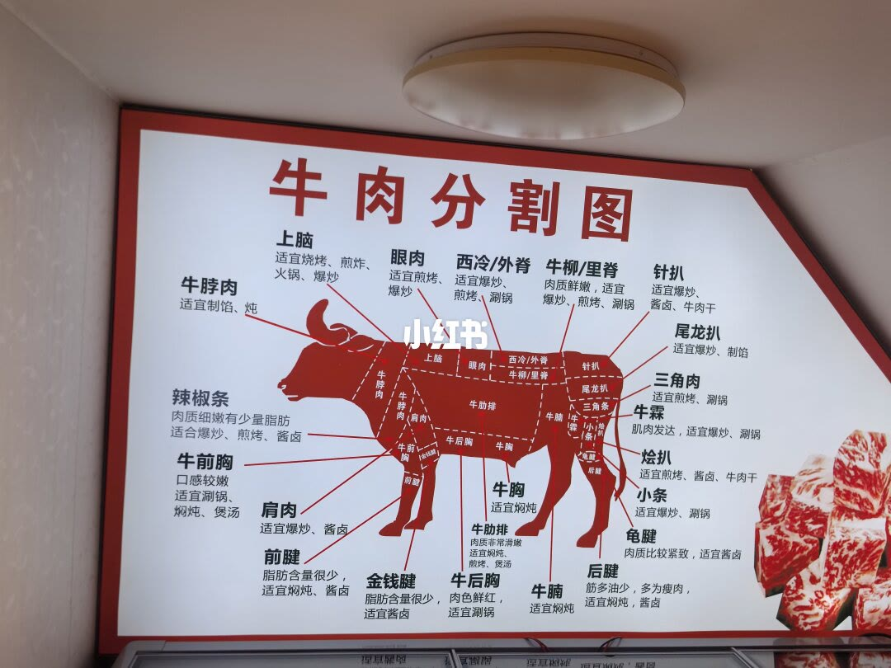
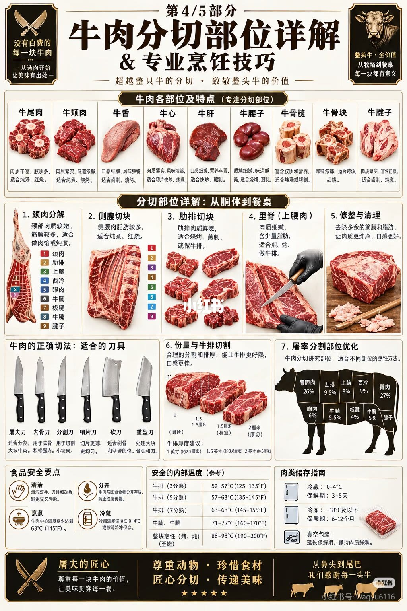

1/2
分割图：按位置对做法

脊背从前到后：上脑适宜烧烤、煎炸、火锅、爆炒。眼肉适宜煎烤、爆炒。西冷标成「西冷/外脊」，适宜爆炒、煎烤、涮锅。牛柳标成「牛柳/里脊」，写肉质鲜嫩，适宜爆炒、煎烤、涮锅。
前段：牛脖肉适宜制馅、炖。辣椒条写肉质细嫩、有少量脂肪，适合爆炒、煎烤、酱卤。牛前胸口感较嫩，适宜涮锅、焖炖、煲汤。肩肉适宜爆炒、酱卤。前腱脂肪含量很少，适宜焖炖、酱卤。
胸腹：牛肋排写肉质非常滑嫩，适宜焖炖、煎烤、煲汤。金钱腱脂肪含量很少，适宜酱卤。牛后胸肉色鲜红，适宜涮锅。牛胸适宜焖炖。牛腩适宜焖炖。
后段：针扒适宜爆炒、酱卤、牛肉干。尾龙扒适宜爆炒、制馅。三角肉适宜煎烤、涮锅。牛霖写肌肉发达，适宜爆炒、涮锅。烩扒适宜煎烤、酱卤、牛肉干。小条适宜爆炒、涮锅。龟腱肉质比较紧致，适宜酱卤。后腱写筋多油少、多为瘦肉，适宜焖炖、酱卤。
轮廓中间还叠了一组较小的部位名，能读出的有上脑、眼肉、西冷/外脊、牛柳/里脊、针扒、尾龙扒。画面中央有平台水印。这页没有价格、没有肥瘦等级，也没有说明这些名字对应哪一种分割标准。
2/2
第 4/5 部分：内脏、出成、温度

页眉口号是：没有白费的每一块牛肉，从选肉开始让美味有出处；超越整只牛的分切，致敬整头牛的价值；整头牛全价值，从牧场到餐桌，每一块都有意义。栏目名是「牛肉各部位及特点（专注分切部位）」。
这一排九个是内脏和骨：牛尾肉，肉质丰富、胶质多，适合烧汤、红烧。牛颊肉，肉质紧实、味道浓郁，适合炖煮、烧烤。牛舌，口感细腻、风味独特，适合卤制、烧烤。牛心，肉质紧实、风味浓郁，适合切片快炒、炖煮。牛肝，口感细嫩、营养丰富，适合快炒、煎制。牛腰子，质地细嫩、味道鲜美，适合烧烤、煎制。牛骨髓，富含胶质和营养，适合炖汤或烤制。牛骨块，鲜味浓郁，适合汤和红烧。牛腱子，肉质紧实、富含筋膜，适合卤制、炖煮。
下一栏「分切部位详解：从胴体到餐桌」列了七步。1 颈肉分解：颈部肉质较嫩、筋膜较多，适合做肉馅或炖煮；旁边的小图标了颈肉、肋排、上脑、西冷、眼肉、牛腩、板腱、牛腱、腱子。2 侧腹切块：侧腹肉脂肪较多，适合炖煮、红烧。3 肋排切块：肋排肉质鲜嫩，适合烧烤、煎制或做牛排。4 里脊写成「里脊（上腰肉）」：肉质细嫩、含少量脂肪，适合煎、烤、做牛排。5 修整与清理：去除多余筋膜和脂肪，让肉质更纯净、口感更好。6 份量与牛排切割：合理分割和厚度能让牛排更好熟、口感更佳；图上标了约 1 厘米薄片、1.5 厘米标准、2 厘米厚切，厚度建议写 1 英寸约 2.5 厘米、1.5 英寸约 3.8 厘米、2 英寸约 5 厘米。7 屠宰分割部位优化：肩胛肉 26%、肋排 9.5%、上脑 8%、西冷 9%、臀肉 27%、胸肉 6%、牛腩 5.5%、板腱 4%，另有一格 5%，字迹在「牛腿」和「牛腱」之间无法确认。腱子单独出现，旁边没有读到百分比。这些百分比加总是 100%。
刀具一行列出屠夫刀、去骨刀、分割刀、细片刀、砍刀、重型刀。用途短句挤在同一行，无法逐把对齐；能读出的用途包括分割大块牛肉、去骨修整、切成小块、切片更薄更均匀，以及处理骨头和坚硬部位。
食品安全四条：清洁，清洗双手、刀具和砧板，避免交叉污染；分开，生肉与即食食物分开存放；烹煮，牛肉中心温度至少达到 63°C（145°F）；冷藏，冰箱保持 0–4°C，或尽快冷冻。同一页的参考中心温度是：牛排 3 分熟 52–57°C（125–135°F），5 分熟 57–63°C（135–145°F），7 分熟 63–68°C（145–155°F）；牛腩、牛腱 71–77°C（160–170°F）；整块烤或炖至嫩 88–93°C（190–200°F）。储存：冷藏 0–4°C、3–5 天；冷冻 −18°C 及以下、6–12 个月；真空包装写的是延长保鲜、保持肉质鲜嫩。页脚是屠夫匠心、尊重动物、珍惜食材，以及「从鼻尖到尾巴，我们感谢每一头牛」。
汇总
买肉先对第 1 页，温度另看第 2 页
结论：想按部位买肉，依据在第 1 页——煎烤爆炒看上脑、眼肉、西冷/外脊、牛柳/里脊；焖炖看牛腩、牛胸、牛前胸、牛肋排和前后腱；酱卤看金钱腱、龟腱、前腱、后腱。内脏、出成比例、牛排厚度和储存只出现在第 2 页。
边界：第 2 页自称第 4/5 部分，本笔记没有其余部分。第 1 页的牛柳/里脊和第 2 页的「里脊（上腰肉）」不是同一套叫法。第 2 页一边写中心温度至少 63°C，一边把 3 分熟写成 52–57°C。百分比是这张图的标注，不是某一头牛的过磅单。右下角账号与笔记作者名对不上，个别字母无法确认。